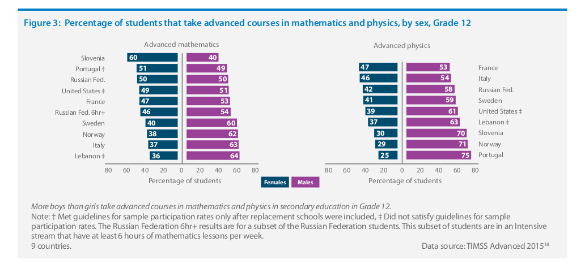

This section considers girls’ participation, subject choice, and progression in STEM education. Gender differences in STEM education, are present at all levels of education. In many parts of the world, the gender gap is to the disadvantage of girls, but in certain contexts and subjects, the gender gap is in their favour. Gender differences in STEM education participation are more apparent as soon as subject selection becomes available, usually in upper secondary education, and become worse as the level of education increases. Children can be exposed to learning opportunities in science and mathematics from a young age, including during ECCE. While all children at this age should have equal opportunity to instruction and educational play opportunities, some studies have found differential access to boys’ advantage. Early educational experiences have been found to have a positive effect on students’ choice of mathematics and science courses later as well as their career aspirations. In primary education, science and mathematics are part of the core curriculum globally and it is expected that both girls and boys have the same exposure to these subjects, although the amount of time differs widely between regions and countries. In many contexts, sex-role stereotyping is reinforced at this age range. Teachers have been found to evaluate girls’ ability in mathematics at a lower rate than boys’ ability, even when they are performing at similar levels. The gender gap in STEM participation becomes more apparent in lower secondary education. This is when specialisation begins and students make choices about which subjects to tudy.Furthermore, in many contexts, girls appear to lose interest in STEM subjects with age and more than boys do. A study in the United Kingdom (UK) found that, at age 10-11 years, boys and girls were almost equally engaged with STEM, with 75% of boys and 72% of girls reporting that they learned interesting things in science. By the age of 18, this proportion fell to 33% for boys and 19% for girls, as measured by participation in STEM advanced studies. Here, boys began dropping out of STEM subjects as they approached their advanced level studies, whereas girls decided to drop out much earlier in secondary school. 43 A longitudinal study with Swedish youth also found that their career aspirations were largely formed by age 13, and that it would be progressively more difficult to engage students in science after that age. Those who have studied STEM subjects at advanced levels in upper secondary are more likely to move on to STEM-related degree programmes in higher education. Regardless of the level of studies, exposure to STEM and intentions do not always guarantee the continuation of STEM studies. For example, girls may consider not to choose educational pathways that lead to occupations where few women are employed or to occupations perceived to be difficult to combine with family life. Although global comparable data on subject selection in secondary education is limited, 46 data from the Trends in International Mathematics and Science Study (TIMSS) Advanced 2015 18 show that in most countries, the majority of students taking advanced courses in both mathematics and physics were boys.
